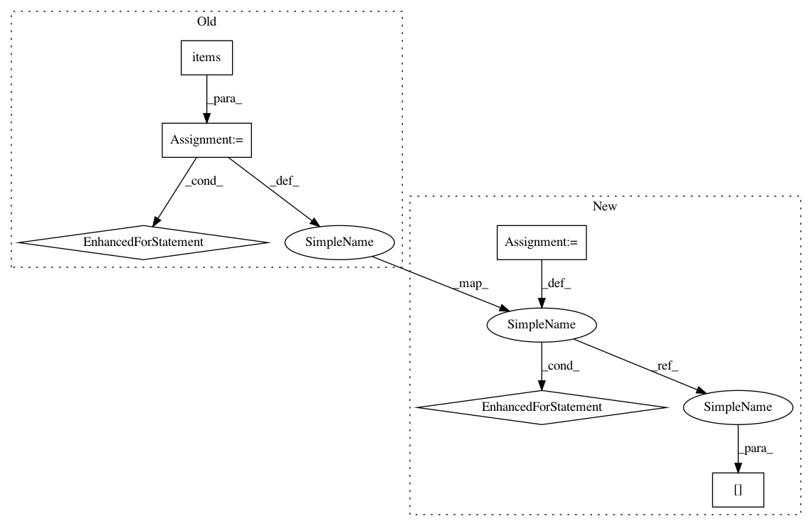

f1cd436574b28063f6490ab669e1b357b124e6a8,keras/callbacks.py,BaseLogger,on_epoch_end,#BaseLogger#Any#Any#,134
Before Change
for k, v in self.totals.items():
self.log_values.append((k, self.totals[k] / self.seen))
for k, v in logs.items():
self.log_values.append((k, v))
self.progbar.update(self.seen, self.log_values)
class History(Callback):
After Change
self.progbar.update(self.seen, self.log_values)
def on_epoch_end(self, epoch, logs={}):
for k in self.params["metrics"]:
if k in self.totals:
self.log_values.append((k, self.totals[k] / self.seen))
if k in logs:
self.log_values.append((k, logs[k]))
self.progbar.update(self.seen, self.log_values)
class History(Callback):
In pattern: SUPERPATTERN
Frequency: 3
Non-data size: 6
Instances
Project Name: keras-team/keras
Commit Name: f1cd436574b28063f6490ab669e1b357b124e6a8
Time: 2015-07-03
Author: francois.chollet@gmail.com
File Name: keras/callbacks.py
Class Name: BaseLogger
Method Name: on_epoch_end
Project Name: keras-team/keras
Commit Name: c9642571c23004a10e8bca1a5b1446af399f80db
Time: 2016-02-16
Author: francois.chollet@gmail.com
File Name: keras/callbacks.py
Class Name: History
Method Name: on_batch_end
Project Name: OpenMined/PySyft
Commit Name: 59d4bbaaf06850e2dfb357855f50b05f6c9aadb1
Time: 2020-10-02
Author: skywind29@users.noreply.github.com
File Name: syft/frameworks/torch/fl/utils.py
Class Name:
Method Name: scale_model